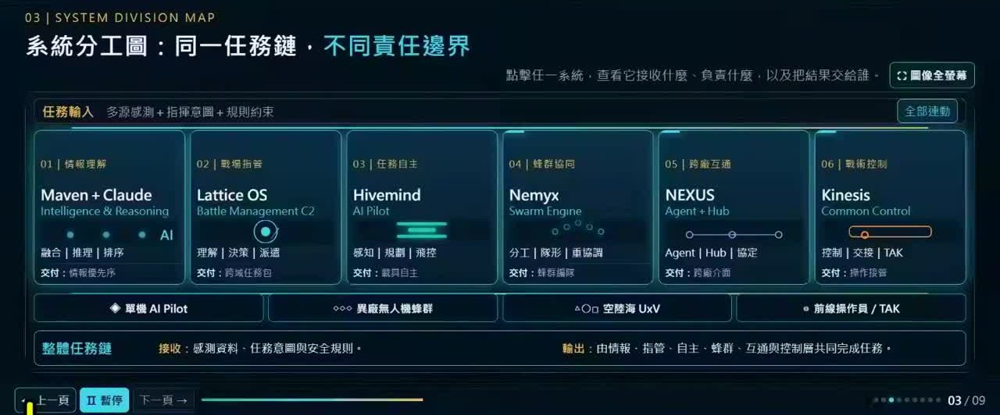
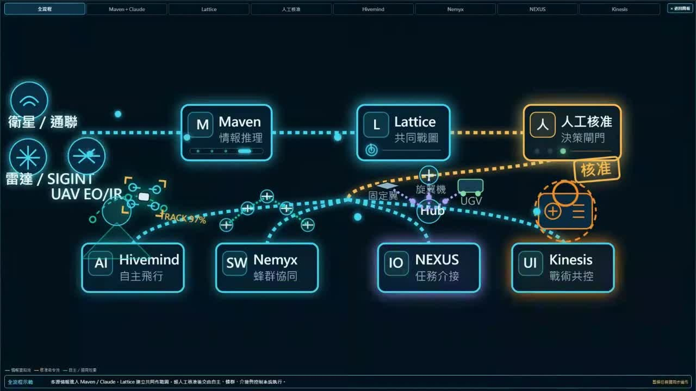
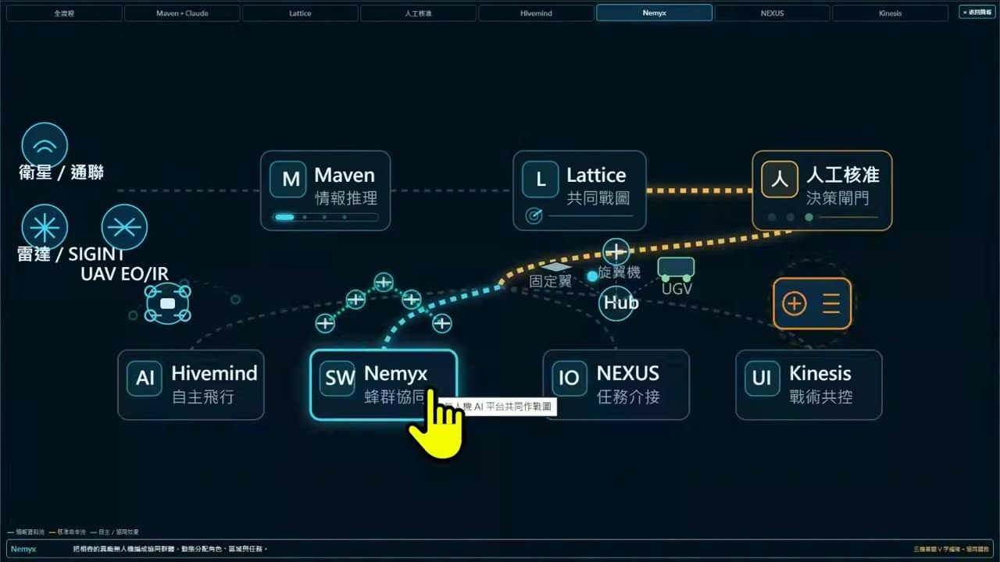
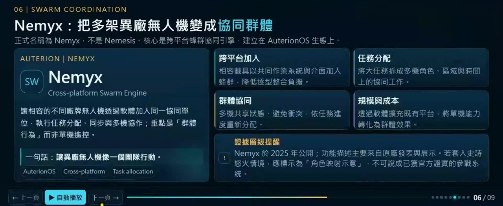
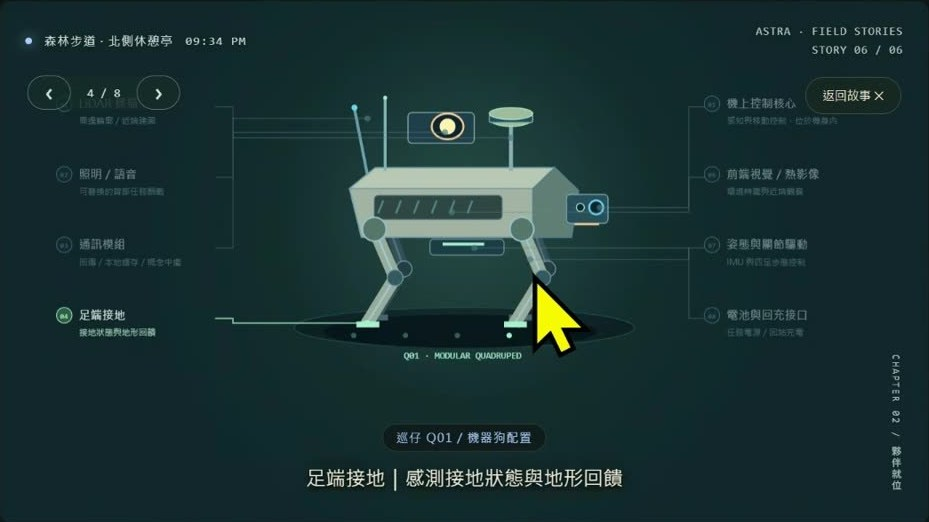
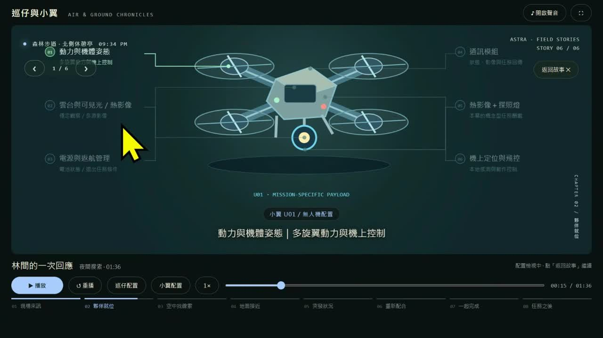
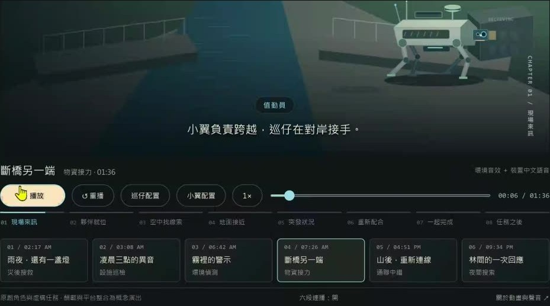
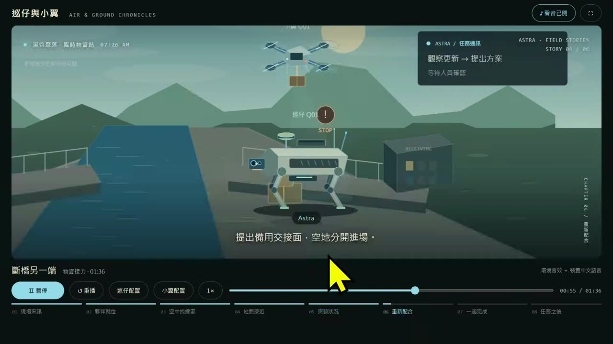
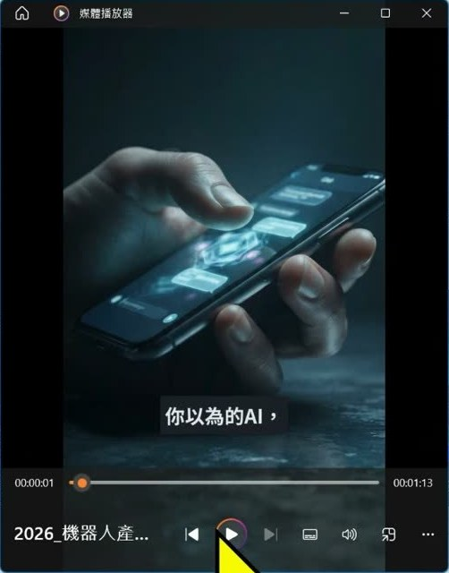

0. 課程資訊與教材
| 課程名稱 | 生成式AI應用電台 EP53｜無人機發展趨勢與 AI 系統介紹 |
|---|---|
| 直播日期 | 2026/09/11（五）20:00，本段錄影全長 28 分 0 秒 |
| 講師 | 電台講師（錄影與逐字稿中未提及姓名，本頁不另行標示） |
| 本堂主題 | 用兩支自製示意動畫，把「無人機、機器狗這些載具為什麼需要 AI、AI 裝在哪裡」講成一般人聽得懂的一條鏈；收尾補一則本週工具更新 |
| 課程節奏 | 三段：軍事情境（00:00–14:30，六個美軍系統的示意流程圖）→ 民用情境（14:50–24:30，「巡仔與小翼」機器狗與無人機的斷橋故事）→ 工具更新（24:50–28:00，Gemini Notebook 影片摘要中文版） |
| 要先準備 | 這是觀念課，前 25 分鐘不需要任何工具。想跟著做最後一段的，要有 Google 帳號（開 notebook.google.com）與一份可以插入影片的簡報軟體 |
📁 課堂用到的教材
這堂沒有簡報檔可下載。講師畫面上的兩支動畫（六系統流程圖、巡仔與小翼）都是他自己用 AI 產出的本機網頁（見第 7 章：HTML＋Remotion，透過 Codex 生成），課堂上跑在自己電腦的 127.0.0.1，沒有公開網址。他說有聲音的版本「晚點把它放在群組」，本頁不轉載也沒有連結。
| 教材 | 課堂上拿來做什麼 |
|---|---|
示意動畫一：無人機 AI 智慧平台分工與連動 | 九頁的互動簡報，含六系統角色矩陣、可點擊的共同作戰圖、每個系統一頁說明。第 2–4 章全部對照這支動畫講 |
示意動畫二：巡仔與小翼｜空地任務紀事 | 六段故事（災後搜救、設施巡檢、環境偵測、物資接力、通聯中繼、夜間搜尋）＋機器狗與無人機的零件配置圖。第 5、6 章用的是「斷橋另一端」與配置頁 |
| Gemini Notebook 的「影片摘要」 | 第 7 章示範：用 9 個機器人相關來源生出 60 秒直式短片，再插進空白簡報 |
🎬 課堂錄影
單段錄影，全長 28 分 0 秒。前兩分鐘在調聲音與抓簡報，正式內容從 02:00 開始。
1. 一張圖看懂這堂
整堂只有一條主線：戰場上那條「感測 → 推理 → 戰圖 → 人核准 → 載具執行」的鏈，每一格都對得回你平常在電腦上玩 AI 的某個概念。上排是講師畫的軍事系統，下排是他一路在對照的日常用法。
2. 開場：一場戰爭，讓生成式 AI 第一次大規模進到無人載具
前兩分鐘在調聲音與抓簡報。正式開講之後，講師先把兩件事講清楚：這堂為什麼要從戰爭講起，以及畫面上的東西全部都是示意。
他一開口就先降低期待：「今天的主題稍微比較深一點，所以如果大家有興趣的話可以聽一下。」接著點出為什麼現在要講這個——無人機、機器狗、無人船、無人艦，是台灣立法院與國家資源正在大量投入的議題，新聞天天有。而這些載具用到 AI 的地方，過去大部分是辨識與資料處理，隨著技術進步會越來越多元。
為什麼從戰爭講起
他挑的案例是今年三月初美國、以色列與伊朗之間的那場戰事，行動代號他唸作「史詩怒火」。他的理由不是戰事本身，而是：這是第一次有生成式 AI 比較完整地參與到無人載具的戰役裡——AI 大量導入做分析、做處理。所以他把這一段當開場白，「讓大家稍微瞭解一下今天會講的主題大概會放在這個上面」。
畫面上的東西，全部是示意
動畫一開始播放，他就先聲明：「這個全部都是示意圖，不是真實的畫面。」順帶評論了當天的一則新聞——有中國研究員用 Claude 模擬台灣防空情境。
六個系統，先認名字
動畫第三頁是一張「系統分工圖：同一任務鏈，不同責任邊界」。六個系統一字排開，每個都標了角色、動作與交付物。這張圖是第 3、4 章的地圖，先看過再往下讀。

| 系統 | 角色 | 一句話（依動畫畫面） | 交付什麼 |
|---|---|---|---|
| Maven ＋ Claude | 情報理解 | 把各種來源的資料融合、推理、排優先序 | 情報優先序 |
| Lattice OS | 戰場指管 | 理解情勢、做決策、派遣任務（Battle Management C2） | 跨域任務包 |
| Hivemind | 任務自主 | 載具上的 AI Pilot：感知、規劃、飛控 | 載具自主 |
| Nemyx | 蜂群協同 | 多架異廠無人機的分工、隊形、重協調 | 蜂群編隊 |
| NEXUS | 跨廠互通 | Agent＋Hub＋協定，把不同廠牌介面接起來 | 跨廠介面 |
| Kinesis | 戰術控制 | 共同控制介面，控制、交接、接 TAK | 操作接管 |
3. 從衛星到人工核准：情報怎麼變成一張共同戰圖
動畫第二頁是可以點的流程圖。講師從最左邊的通訊講起，一路講到那個橘色的「人工核准」閘門，這一段是整條鏈的上半部。

第一步：通訊靠星鏈，不靠 WiFi
他先講最不起眼的一格：通訊。戰場上不可能吃 WiFi、不可能接有線，所以無人機與載具吃的是星鏈。他用大家熟悉的事情類比——就像跟中華電信、遠傳續約一樣，付月租費，手機的網路直接接在星鏈上（他補充台灣目前還不行，日本可以）。載具在現場做判斷時，靠的是自己的感測器與掃描；把結果送回去，靠的就是這條線。
第二步：Maven 是「把所有資料丟給 GPT」的那一格
Maven 是情報推理與收集的地方，裡面搭載 Claude 幫忙判斷。講師特別說，這類平台的後端會不斷整理資料，大型語言模型是可以換的——現在用 Claude，之後可能換別家的新模型，也可能同時接不同的 Agent，甚至接在地端的模型。它做的事，用他的話講就是：
第三步：Lattice 把儀表板變成「可以被人決策的任務」
所有前端收到的東西——不管是機器狗去掃的、人去看的、士兵身上衛星通訊回傳的——格式各不相同：影像、經緯度座標、加密封包，全部先到 Maven 彙整處理，再到 Lattice。Lattice 產出的叫共同作戰圖像：經緯度、座標、人數，以及所有無人機掃到的資料都在同一張圖上。他順口說「台灣有買類似的東西」。
但 Lattice 的重點不是畫圖，是把彙整後的資訊轉成可以被人工決策的任務：現在看到這些平民、這些敵軍、這些建築物、這些基礎設施——然後把球交給人。
- 前端收資料：無人機、機器狗、人、士兵的衛星通訊，全部都是感測器。
- Maven 彙整：不同格式的資料統一整理，由語言模型做初步推理與分類。
- Lattice 出戰圖：變成一張共同作戰圖像，再轉成一包一包可以決策的任務。
- 人工核准：人去檢查有沒有看錯、是不是偽裝、是不是錯誤的，決定要攻擊、偵查、送水、送物資還是救人。
- 命令往下發：核准後才交給載具端的四個系統執行（第 4 章）。
第四步：人工核准——整條鏈唯一不能省的閘門
他在這裡放慢速度。人要做的是檢查：有沒有看錯？有沒有是偽裝的？有沒有是錯誤的？而且要保留接管的權利。
4. 載具端的四個系統：邊緣運算、蜂群、介面整合、遙控切換
流程圖下半部的四個方塊，講師每一個都用你已經會的東西來解釋：本機小模型、sub agent、USB、遙控器。
Hivemind：讓載具自己在現場做決定（邊緣運算）
Hivemind 是一家公司提供的系統，裝在載具端。講師用它來解釋「邊緣運算」這個大家聽過但不一定懂的詞：
- 很吃網路——邊緣運算還是要靠網路運作，這也是第 3 章先講星鏈的原因。
- 機子裡是小語言模型——「以前我們都會說大語言模型很快，但是小語言模型比較適合邊緣運算上。」［10:29］載具上跑不動大模型，也不需要。
- 自主飛行——要飛到東側、飛到哪個經緯度座標，它自己判斷。
Nemyx：蜂群，就是實體化的 sub agent
一架不夠，所以有母機與僚機，整體做任務分工。他舉的例子很直白：有人攻擊，它要衝出來擋子彈；有人射飛彈，它要去擋；落石衝下來，它要擋掉——為的是讓任務可以繼續執行。背後的邏輯是成本：無人機越來越便宜，分中高低等級，貴的飛得遠、續航好；昂貴的飛彈，可以用「幾十架便宜的去撞他」。
他接著往前推：蜂群如果轉移到機器人，像特斯拉預計 2027 年量產的人形機器人，也是管家式的分工——你負責出門、你負責掃地、你負責煮飯，分工完各自回報。


NEXUS：介面整合，像一顆 USB
無人機有很多種——校園裡的無人機足球、考到專業執照的飛手玩的那種，他不一一講。他要講的是：種類一多，最需要的是介面的整合。「我必須要有一個叫做有點像是一個 USB，有點像是一個資訊去把它整合在一起。」NEXUS 在流程圖上叫「任務介接」，角色矩陣上叫「Agent＋Hub＋協定」，就是那顆把不同廠牌接在一起的轉接頭。
Kinesis：整合完了，還要一支能切換的遙控器
「整合在一起不夠，還需要有一個類似遙控器的方式。」如果是人在遙控，要能互相切換——雲端遙控、整合、地端，三者之間接得起來。Kinesis 在矩陣上寫的是「控制｜交接｜TAK」，交付物是「操作接管」：也就是第 3 章那個「保留接管權利」，落到載具端的具體按鈕。
| 載具端系統 | 講師用什麼來解釋 | 你平常已經會的對應概念 |
|---|---|---|
| Hivemind | 邊緣運算、小語言模型 | 在本機跑小模型，不把每件事都送上雲端 |
| Nemyx | 蜂群、母機與僚機 | AI Agent 裡的 sub agent 分工，或多個角色互相討論 |
| NEXUS | 「有點像是一個 USB」 | 把不同工具接到同一個介面上（第 5 章他會直接說 MCP） |
| Kinesis | 「類似遙控器」、人可以切換 | 人隨時接管：Agent 跑到一半你可以停、可以改 |
這一段的收尾：「那時候美軍就是靠這套系統，算是第一次在戰爭中有 AI 大量的導入，然後導入做分析、導入做相關的處理。」［14:00］中間的細節他沒展開，「你就打史詩怒火戰爭 AI，它就有非常非常多的相關的介紹」。
5. 拉回一般情境：機器狗身上的 AI 到底在哪裡
「講太多戰爭大家可能會覺得離比較遠。」講師切到第二支動畫，用一隻機器狗的零件配置圖，回答一個很多人會問的問題：AI 在哪裡？
民用的六種任務
他先列了這隻狗與這架無人機會被派去做的事：搜救、基礎設施巡檢（發電廠）、工廠守衛、校園巡邏，再加上幾種環境條件——突然的大霧、橋斷了要接力、通訊方式、夜間搜尋。前提他講在前面：這些「可能都是非紅色供應鏈或者是台製的安全的情況下」。這支動畫叫「巡仔與小翼」——巡仔是機器狗，小翼是無人機。
一隻機器狗身上有什麼
他對著配置圖一個一個點過去。以下依他講的順序整理，右欄是他在 19:00 之後一路對照回來的 AI 概念——那是這一章真正的重點。
| 零件 | 它做什麼（講師口述） | 對回你平常用的 AI |
|---|---|---|
| 照明與雷達 | 雷達做掃描，語音跟照明放在機身上，每個機型放的位置不一樣 | 感測器＝輸入 |
| 通訊模組 | 回傳資訊；同時它自己就是「一台行走的基地台」，是熱點 | API 連線；斷線時停下來收訊號 |
| 足端接地感測 | 地形是滑的、水的、泥沙、碎石地，能感觸回報 | 環境資訊回填 |
| 平衡與關節 | 「最重要是平衡性，我不希望他摔倒就沒了」；摔倒能翻身；趴、前進、轉身，「很像人的關節」 | ——（純機械） |
| 前端視覺／熱影像 | 夜間用熱成像做比較詳細的掃描 | 影像辨識 |
| 電池與回充 | 最後要回充，「這是基本的」 | —— |
| 機上控制核心 | 控制所有感知、做邊緣運算，「不用再回傳到你的本機太久」；把資訊暫存、檢查、分析，做判斷 | Agent＋工作流 |


「AI 在哪裡？AI 在這。」
講到機上控制核心時，他自問自答了這一句。接下來的一分半是整堂課的核心：為什麼一隻機器狗不能只裝一個 ChatGPT。
- 一個大模型——會聊天、會判斷，但它沒有手腳，什麼都做不了。
- 加上 Agent——可以自己決定下一步要做什麼。
- 加上工作流——收到東西要回到哪裡、哪些機制、要導入哪些功能：導入它的腳、它的攝影機、它的天線。
- 接上工具——「你可以想像他要控制的工具有哪些？他的手，他的腳，他的天線。」它不可能下載 Canva 去背，它控制的是實體零件。
- 接上知識——「你可以想像他要導入的 MCP，還有導入的 RAG 有什麼？他需要有這邊的地形圖。他至少知道地形圖。」
- 加上保護——影像辨識之外，還要有寫好的保護程式，避免被人劫走〔逐字稿此處聽不清，待確認〕。
6. 斷橋故事：兩個 Agent 怎麼對話、接力、檢討
零件講完，他挑動畫裡的第四段「斷橋另一端」播給大家看。聲音沒開成功，他說「大家可以看字幕就好」，一邊播一邊講。

故事在演什麼
橋斷了，物資要送到對岸的接收點。無人機（小翼）負責飛過去，機器狗（巡仔）在對岸接手。中間發生的事，講師是這樣拆的：
- 掃描與回報——狗以前送物資可能有些不準，所以它先掃描、把位置定好；遇到障礙，它會告訴你「現在有障礙」。「就是他在展示他的掃描的技術。」
- 兩個 Agent 對話——掃完、影像辨識發現狀況，「他們兩個互相對話，就是 Agent 之間的對話」。誰講話、誰收起來、換誰去完成，都是兩個 Agent 在協調。
- 任務後檢討——「任務之後記得 Agent 他完成之後會去檢討，檢討他有沒有完成啊，或者是哪邊有問題。」然後飛回去。

為什麼要兩個，不是一個
「他就是兩個互相合作，一個做掃描，一個做他可以比較實地的。」無人機負責看，狗負責走——狗的腳比無人車的輪胎或履帶靈活，可以進山林。山林裡有些影像會被遮住、拍不到，就要靠狗過去，把兩邊的資訊彙整。
他的收尾：把帳號放進機器人
「有興趣可以看 paper，如果你看機械系的或者是航空系的，他們最近發了很多這樣的 paper。」然後是這一段真正的結論：
7. 本週工具更新：影片摘要出中文版，直式短片直接進簡報
最後三分半是慣例的工具更新。剛好有人問他動畫是用什麼做的，他先答了那個，再示範 Gemini Notebook 的影片摘要。
先回答：那兩支動畫怎麼做的
「我直接讓他畫 HTML，就是加 Remotion。」Remotion 是用程式碼做動畫的工具，他讓 AI 去控制它。他給 AI 的設定是：必須是情境式、每一段跟著他的講述走。「如果大家有興趣你就打 Remotion，然後用 Codex 去連他之後就可以做出類似的效果。當然可以做得更好，點數花下去就可以更好。」
影片摘要：英文版出了一個半月，中文版上週才出
「也不算新功能。他大概一個半月前出了英文版的影片摘要，那時候就想說中文版哪時候要出？中文版上個禮拜出了吧。」他強調它跟 Reels、Shorts 那種短影音「很像但不太像」——它是把長內容變成直式的短片，60 到 70 秒，而且「中文是準的」。
- 在 Gemini Notebook 打開一本已經放好來源的筆記本（他這本叫「機器人新紀元：仿生技術與安全邊界」，9 個來源）。
- 右側工作室點「影片摘要」。
- 格式選「精簡」（標著「新推出」，簡潔的摘要，方便快速掌握來源的核心概念）；另一個選項是「說明影片」（條理分明的詳盡摘要）。
- 語言選「中文（繁體）」，來源維持全選，按立即生成。生出來的那支叫「2026 機器人產業的四大關鍵趨勢」。

拿來做什麼：簡報的引言
他給的用法很具體：放 Reels、做前導介紹，或者當簡報的引言、導論的出口。做法只有三步：
- 開一份空白簡報，按插入。
- 媒體 → 視訊 → 從這個裝置，選剛下載的影片，「他就可以無縫的放進來」。
- 設定播放方式，開始簡報時它會全螢幕播放。
8. 這堂課真正在教的事
把 28 分鐘濃縮成四件事。名詞可以忘，這四件不要。
一、每一個聽起來很軍事的系統，都對得回你已經會的東西
Maven 是「把資料丟給 GPT 分析」，Lattice 是「做成儀表板」，人工核准是「你看過再決定」，Hivemind 是「本機跑小模型」，Nemyx 是「sub agent 分工」，NEXUS 是「USB／MCP」，Kinesis 是「人隨時能接管」。講師整堂沒有引入任何一個你不會的概念，他只是把你在螢幕上做的事，一格一格搬到天上與地上。
二、「人在迴圈上」不是口號，是流程圖上一個具體的位置
它在 Lattice 之後、載具之前，而且在民用的送物資故事裡也在——狗要改交接點，一樣是「提出方案、等待人員確認」。不是技術做不到自動，是「現在在國際上的公約還沒有辦法讓他開放去做」。你設計自己的 Agent 流程時，也該問：我的閘門在哪一格。
三、實體裡的 AI 不是一顆模型，是模型＋Agent＋工作流＋工具＋知識
「一台 AI Chatbot 是不夠的，所以他需要 agent。agent 也不夠。」手、腳、天線是它的工具（MCP），地形圖是它的知識（RAG），收到訊號要走哪條路是工作流。少一層，它就是一個會講話的盒子。這一段用機器狗講，但講的是你在電腦上做自動化時每天遇到的事。
四、分清示意與實證，是看這類新聞的基本功
他自己的動畫全部是示意，Nemyx 那頁還自己標了「證據層級提醒」；用 Claude 模擬台灣防空的新聞，他的判斷是「就當作新聞就好」，理由是模型爬不到真實資料。新聞裡的 AI 有沒有拿到真資料、誰在最後核准——這兩個問題，這堂課之後你會自己問。
9. 老師金句
10. 資料來源與整理說明
| 來源 | 直播電台 EP53 錄影（2026/09/11），單段，全長 28 分 0 秒；沒有另外的簡報或講義檔 |
|---|---|
| 整理方式 | 全程本機處理：以場景偵測擷取 39 張關鍵畫面、產生 116 段逐字稿，再依逐字稿手寫章節目錄；截圖另從錄影補抓 3 個時間點（03:56、04:36、20:24）取得沒有系統提示框的畫面 |
| 時間戳 | 章節標題與引文後方的［mm:ss］對應錄影播放器時間 |
| 整理 | 竹貞（Tarshar 的逐幀筆記專員），2026/09/28 |
已知限制，請先看過再引用
- 逐字稿是機器產生的，人名與工具名會聽錯。本頁修正了可以由畫面或上下文確認的錯字：Claude 被聽成「Cloud」、Grok 被聽成「Glock／Goke」、ChatGPT 被聽成「trap／TrapBar／TrapG」、Chatbot 被聽成「Checkbar」、Gemini 被聽成「JumanEye」、Maven 被聽成「Vamint」、Lattice 被聽成「Latis」、MCP 被聽成「MCD」、paper 被聽成「PayPal」、Reels 被聽成「REALS」、衛星通訊被聽成「微信通訊」、邊緣運算被聽成「邊緣預算／平原預算」、蜂群被聽成「風群」、母機僚機被聽成「木鳥的母雞／療雞」、機器狗被聽成「機器口／GT 狗」、大型語言模型被聽成「大型元模型」、儀表板被聽成「儀表版」、經緯度座標被聽成「金尾珠座標」、小翼被聽成「小異」、史詩怒火被聽成「死屍怒火」、生成式 AI 被聽成「深層式 AI」、Optimus 被聽成「Upromise」，共 22 類；不確定的一律保留原樣，沒有猜測補詞。
- 四處聽不清、本頁標為〔待確認〕不補寫：07:00 提到的某個新模型名（逐字稿「GBT 的 Aztro」）、10:58 蜂群段落的一個型號（逐字稿「WNG」）、08:34 提到的一種資料格式（逐字稿「MATAM 格式」）、20:00 保護程式要避免的事（逐字稿「避免被人家遭享去」）。13:00 講到特斯拉機器人時提到的「Grok bot」也只有一句帶過，本頁未展開。
- 講師姓名在錄影與逐字稿中都沒有出現，本頁一律寫「電台講師」，不從畫面上的任何名稱推測。
- 戰事與軍工相關內容照講師口述整理，本頁不評論、不補充外部資料；提到軍工股的段落不列公司名，不是投資建議。六個系統的功能描述來自講師動畫畫面，該動畫自己標明為「角色映射示意」，請勿當作已證實的戰報引用。
- 可信度分級：金句章 14 則全部是錄影實錄（僅校正上述聽錯的工具名）；第 2 章的六系統表、第 6 章的六段故事與八個節拍、第 7 章的介面選項文字，是從畫面文字抄下來的，可能有辨識誤差；第 5 章零件表右欄「對回你平常用的 AI」是依講師 19:00–20:00 的口述整理，不是他逐項講的對照。
- 逐字稿中出現的學員稱呼、提問者暱稱，本頁一律隱去。課堂上有人問「簡報是用哪個軟體」，本頁只保留講師的回答。
- 課堂截圖已裁掉線上教室右側的與會者欄位（原始畫面 1920×1080，只保留左側 1440×810 的分享區）；非全螢幕的畫面另外裁掉瀏覽器分頁、書籤列、網址與本機路徑、帳號頭像與工作列。本頁 10 張截圖約每 3 分鐘一張，比一般每 10 分鐘一張密——這堂的內容幾乎全在兩支動畫的畫面上，少一張就少一個系統。
- 引用到作業、貼文或簡報之前，請對照錄影原始段落再確認一次。